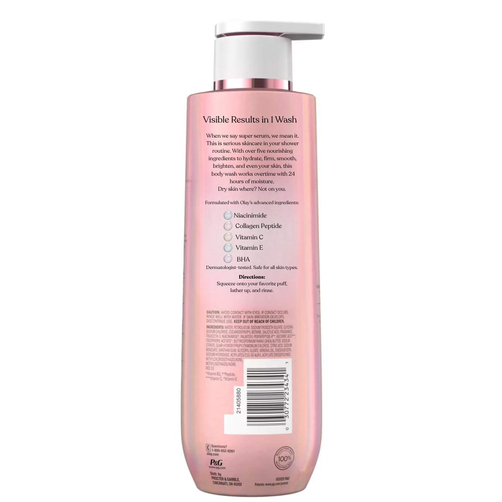
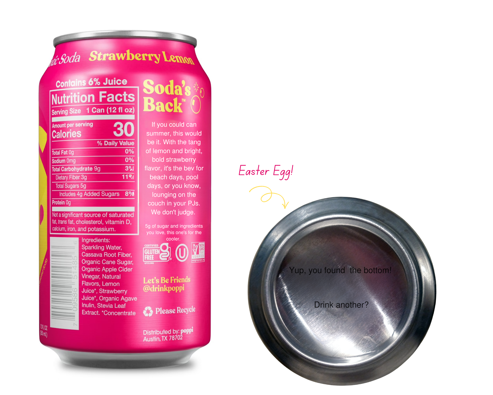
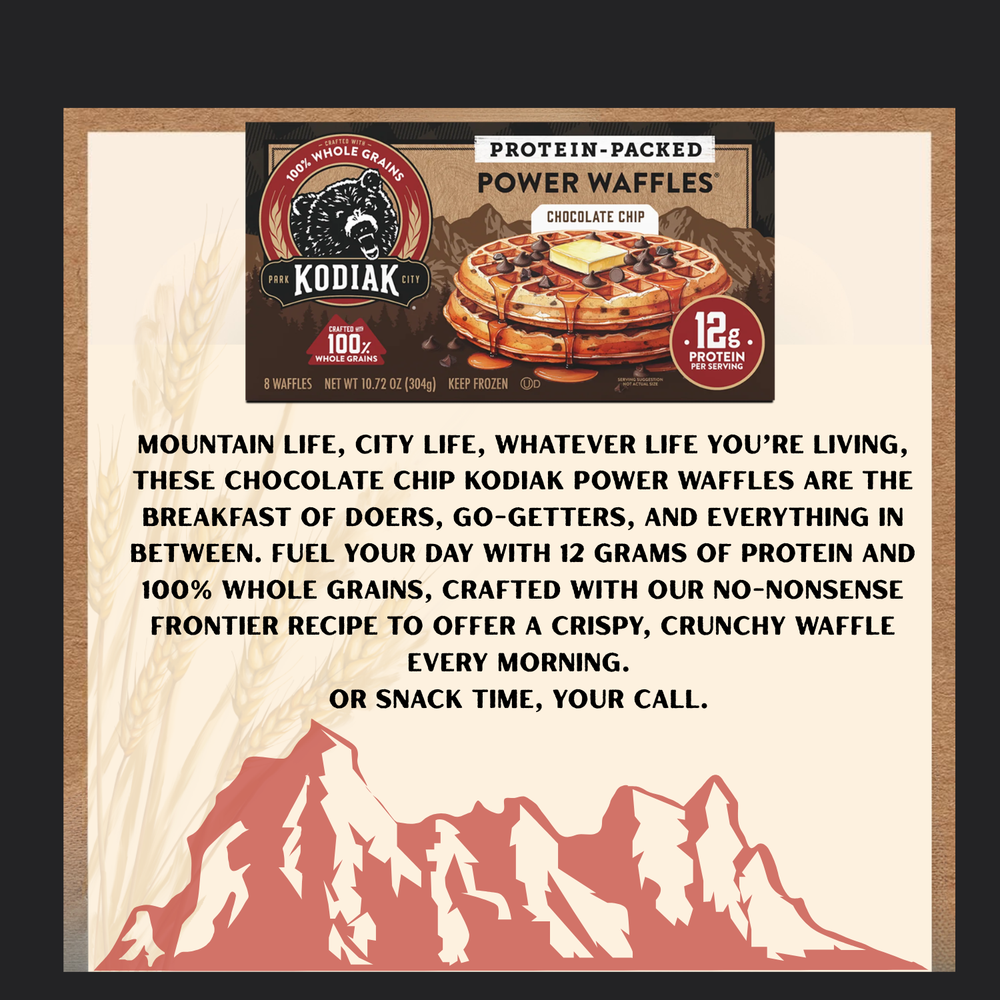

Speculative packaging rewrites across beverage, food, and personal care — developed to demonstrate brand voice range and the ability to write copy that earns shelf space. Each piece includes the original copy alongside a rewrite and creative rationale.

Olay Super Serum Body Wash combines skincare ingredients, moisturizers, and our advanced skin delivery technology to noticeably improve skin.
Rewrite
FRONT PANEL
Visible Results in 1 Wash
BACK PANEL
When we say super serum, we mean it. This is serious skincare in your shower routine. With over five nourishing ingredients to hydrate, firm, smooth, brighten, and even your skin, this body wash works overtime with 24 hours of moisture. Dry skin where? Not on you.
SIDE PANEL
Formulated with Olay's advanced ingredients: Niacinamide, BHA, Collagen Peptide, Vitamin C, and Vitamin E. Dermatologist-tested. Safe for all skin types.
DIRECTIONS
Squeeze onto your favorite puff, lather up, and rinse.
Creative Rationale
Olay's original copy is clinical and flat — it's not speaking to the consumer, it's just there. "Advanced skin delivery technology" is brief language that leaked onto the bottle. No one talks like this. Olay has been repositioning toward younger, skin-conscious consumers for several years. The original copy hasn't caught up to the brand's ambition. The rewrite names the product's real tension — serious skincare happening in your shower routine — and leads with confidence instead of credentials.

Wanna get juicy? Sip on this super refreshing n' tasty blend of ripe strawberry and crisp lemon that's so bold, it just asked for your number.
Rewrite — Back Panel & Easter Egg Only
All other panels are Poppi's original copy. Only the back panel and bottom easter egg were rewritten.
BACK PANEL — REWRITE
If you could can summer, this would be it. With the tang of lemon and bright, bold strawberry flavor, it's the bev for beach days, pool days, or you know, lounging on the couch in your PJs. We don't judge.
5g of sugar and ingredients you love, this one's for the cooler.
BOTTOM CAN — EASTER EGG — REWRITE
Yup, you found the bottom. Drink another?
Creative Rationale
Poppi's brand voice doesn't take itself too seriously, so I thought I'd have a little fun with it myself. I chose "if you could can summer" as an opener because this flavor is almost like a strawberry lemonade — an iconic summer drink. I added "we don't judge" for humor and the easter egg on the bottom to match Poppi's playful vibe. The sugar callout lands naturally at the close without feeling like a health claim — it earns its place as a reason to throw it in the cooler.

Count on Kodiak Chocolate Chip Power Waffles to nourish your day when you're in need of a filling breakfast. We construct these protein-packed waffles from a frontier recipe, crafted with 100% whole grains for a taste that will take you back to simpler time.
Rewrite — Back Panel Only
Front panel is Kodiak's original copy. Back panel and box bottom were rewritten.
FRONT PANEL — ORIGINAL
12G of Protein • 100% Whole Grains
BACK PANEL — REWRITE
Mountain life, city life, whatever life you're living, these chocolate chip Kodiak Power Waffles are the breakfast of doers, go-getters, and everything in between. Fuel your day with 12 grams of protein and 100% whole grains, crafted with our no-nonsense frontier recipe to offer a crispy, crunchy waffle every morning. Or snack time, your call.
BOX BOTTOM — REWRITE
Try our other flavors and products. [QR Code]
Creative Rationale
Kodiak is a rugged, frontier-life brand that leans heavily on its identity. Understandable. But this copy here seems generic. I added in a bit more inclusiveness with "Mountain life, city life, whatever life you're living" to expand the audience without diluting the brand. "Construct" was an odd word choice; it sounds like they made furniture, not food. I used "crafted" instead to make it sound more hand-made, like outdoorsmen do. "Frontier recipe" alone is vague. "No-nonsense frontier recipe" earns the brand's identity by implying real ingredients and no shortcuts, which is what Kodiak stands for. Plus, this is more than a breakfast food. It's a great snack option, too.
Blog content and client case studies written during agency copywriting work at Appleton Creative, Orlando.
Read Article ↗
Read Article ↗
Self-directed TikTok content written, scripted, and produced for a hand sanitizer brand — full creative control from concept through on-set delivery, run as an independent promotional effort.
▶ 34.5K views ♥ 2K likes
Watch on TikTok ↗
▶ 16.1K views ♥ 1.2K likes
Watch on TikTok ↗
Satellite Media Tours and branded segments produced for NBC affiliate WFLA's Daytime and Lifetime, reaching a combined estimated 20M+ viewers across categories including tech, food, and lifestyle.
▶ Est. ~5,500,000 impressions • National Broadcast
Watch on Vimeo ↗
- Theme: Approach R10 — Father's Day gift for golfers
- Priority messaging: Portable launch monitor, real-time metrics (club speed, ball speed, launch angle), video swing recording with stats overlay
- Secondary messaging: 43,000+ virtual courses, play with up to 3 friends, 10-hour battery life
- Tone: Light and conversational — avoid technical verbiage, no prices or phone numbers
- CTA: Drive to Garmin.com
This advanced piece of tech is called the Approach R10. It's a portable, lightweight launch monitor that can bring Dad's game to new heights and lets him take his practice sessions anywhere—from home to the range—without hassle.
With over a dozen key metrics available in real-time, including club head speed, ball speed, swing tempo, and launch angle, the Approach R10 gives him the data to analyze every shot and fine-tune his game. Whether he's a seasoned player or just starting out, the real-time feedback makes it easy for him to spot areas for improvement, so he can play with more confidence.
What makes the Approach R10 even better is the ability to record video clips of each swing, with real-time stats overlaid on the footage. This helps Dad visually see his performance and instantly understand what adjustments he needs to make. It's like having a virtual coach right there with him.
If Dad loves to explore different courses, the R10 and active Garmin Golf Membership offers a virtual round feature, allowing him to play over 43,000 courses from around the world—without stepping foot outside. So if he's preparing for a trip or revisiting his favorite course, he can practice his strategy and tweak his game from home. Plus, with the option to play with up to three other golfers, he can challenge his friends to a round whenever they're free.
And the battery life on this thing is fantastic. With 10 hours of battery life, the R10 ensures Dad can keep practicing without interruptions.
This Father's Day, skip the usual gifts and opt for something that truly enhances his experience with the Garmin Approach R10. Check out Garmin.com to learn more and give your golf-loving Dad a practical gift he can use for years to come.
▶ Est. 5,888,534 impressions • National Broadcast
Watch on Vimeo ↗
- Theme: ScoopFree Self-Cleaning Litter Box, holiday gifting angle
- Priority messaging: Hands-free cleaning, odor control, crystal litter benefits
- Secondary messaging: Health tracking counter for early UTI detection
- CTA: Drive to ScoopFree.com
If you've experienced this weird phenomenon, it's time to end that poo-crastinating guilt this holiday and give you and your cat a ScoopFree Self Cleaning Litter Box from PetSafe!
This hands-free litter box allows you to say goodbye to scooping, cleaning, and refilling it yourself...for weeks! It's a must-have for any cat owner, and you'll never go back to a traditional litter box again.
With the self-cleaning litter box, you'll no longer experience bad odors wafting in the air, sweeping the floor, or inhaling the dust from litter ever again. With multiple varieties available, the special crystal litter has great odor control, which removes all smells by absorbing urine and dehydrating solid waste up to 5 times better than traditional litter. Even better, the crystal litter is 99 percent dust-free, and won't stick to your cat's paws, so you can have a cleaner, fresher home all around!
After your cat uses the litter box, the rake automatically sweeps solid waste into the covered waste trap, so you don't have to touch it, see it or smell it. The ScoopFree litter box comes with a disposable litter tray, which has a plastic lining to prevent leaking. Once the tray is used up after several weeks, simply place the lid on top and throw it away. It's that easy!
The sleek design features neutral gray colors that blend seamlessly with modern home décor. There's even a health counter that tracks how many times your furry feline uses the box, which is a convenient way to detect early signs of health issues, such as urinary tract infections.
So quit poo-crastinating for good this holiday and make the switch to a ScoopFree Self-Cleaning Litter Box from PetSafe! To purchase yours and learn more, visit ScoopFree.com today!
▶ Est. 5,411,520 impressions • National Broadcast
Watch on Vimeo ↗
- Theme: Game day entertaining with Wisconsin Cheese
- Priority messaging: Award-winning cheesemaking reputation, recipe inspiration (cheeseboard, pretzels, dip)
- Tone: Football/game day language woven throughout
- CTA: Available at Whole Foods; drive to WisconsinCheese.com
Wisconsin is the State of Cheese. It's the MVP of cheesemakers, winning more awards than anywhere on the planet. And if you're looking for delicious ways to carry you through to the fourth quarter, I know a few cheesy recipes to add to the table.
First up, you really can't go wrong with this all-star Bloody Mary Cheeseboard. Filled with Wisconsin Aged Cheddar, Havarti, Cheddar Blue, Provolone, Mozzarella, and Fresh Cheese Curds, this will delight your taste buds from kickoff through the post-game! I've loaded my board with bloody mary favorites like spicy chicken wings, sausage, popcorn, and crackers, but you can add just about anything you want!
Next, if you're looking for that classic stadium snack, there's no need to wait in line for this gameday appetizer. Check out these soft parmesan pretzels. Homemade and sprinkled in Wisconsin's signature Parmesan cheese, these pretzels also pair perfectly with this touchdown-worthy warm beer cheese dip. It's super easy to make. All you need is Crystal Farms Cream Cheese, Wisconsin Pepperjack, some Cheddar, or you can even add your own favorite for a delightful dip. Once you taste this winner, it might even make you and your loved ones do an endzone dance.
So kickoff the big game with Wisconsin Cheese! Pick up your favorites at your local Whole Foods, and be sure to look for the Proudly Wisconsin badge to trust you're getting a proven winner! For more gameday recipe inspiration and perfect pairing suggestions, visit WisconsinCheese.com and fuel your fan frenzy the right way!